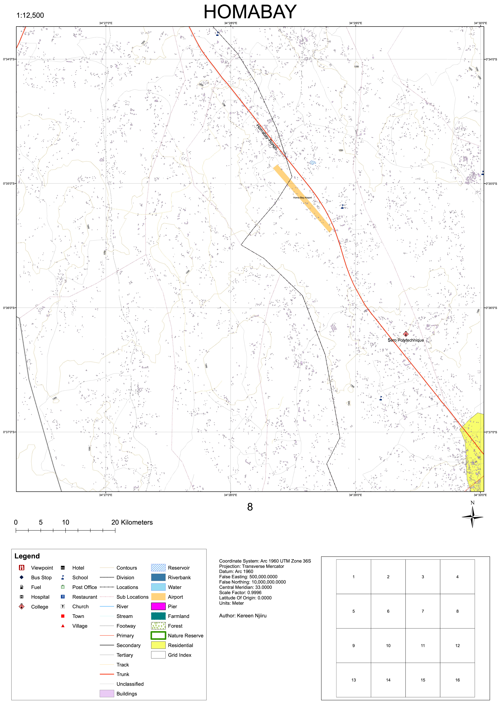
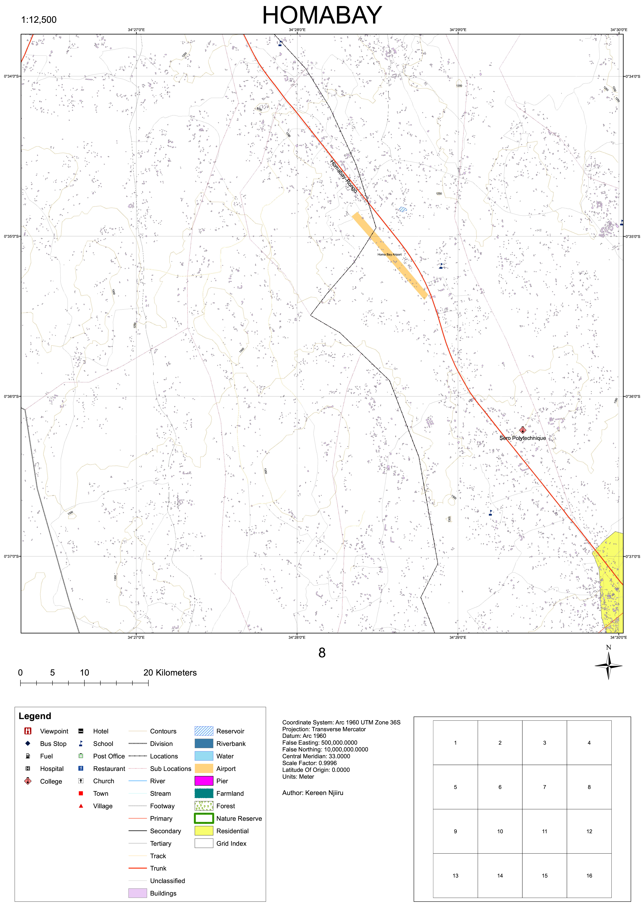

← Back to Portfolio
Cartographic Map Design and Production: Automated Map Series Creation
Project Overview
This project focused on designing a multi-sheet map series using ArcMap while applying core cartographic principles such as generalization, symbolization, and scale optimization. The goal was to ensure that spatial data was effectively visualized at a large scale, balancing detail and clarity across 16 map sheets.
Study Area & Specifications
- Location: 34° 15’ 00” - 34° 30’ 00” E and 0° 30’ 00” S - 0° 45’ 00” S
- Extent: 756.25 km² (186,873.445 acres)
- Scale & Paper Size: Optimized for A1 layout
Methodology & Process
- Grid Index & Data-Driven Pages Setup
- Created a 4×4 grid index to divide the map series into 16 sheets
- Added a scale field for automated scaling across all pages
- Data Acquisition, Generalization & Symbolization
- Data Sources:
- OpenStreetMap (via Geofabrik) → Roads, buildings, land cover
- SRTM (via RCMRD Geoportal) → Digital Terrain Model (DTM) & contours
- Cartographic Processing:
- Generalization:Adjusted feature density and detail to match the map scale
- Symbolization:Applied appropriate colors, line styles, and text sizes for legibility
- Labeling:Optimized placement to avoid overlap and enhance readability
- Cartographic Layout & Map Elements
- Added essential elements: title, grid, scale bar, legend, north arrow, and labels
- Applied typography and visual hierarchy for clear interpretation
- Automation & Exporting
- Enabled data-driven pages to automate the production of the 16-sheet map series
- Reviewed and refined dynamic elements such as labels and legends
- Exported the final series as a high-resolution PDF
Project Outcome
This project successfully applied cartographic principles to create a structured, visually coherent, and accurate map series. The process reinforced key skills in generalization, symbolization, map design, and automation, making it a scalable approach for large-area mapping projects

 
